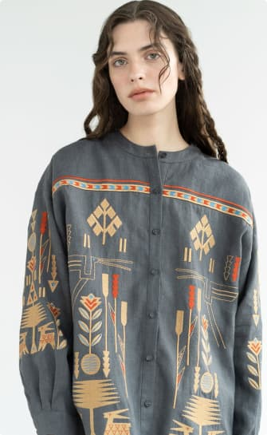

<section class="hero">
  <div class="container hero-container">
    <div class="hero-mob">
      <h1 class="hero-title">
        Reviving the traditional
        <span class="hero-ukrainian">Ukrainian</span> artistry in every stitch.
      </h1>
      <div class="hero-button">
        <a href="#made" class="hero-anchor-btn"
          >order
          <svg class="btn-icon" width="26" height="10">
            <use href="./public/favicon.svg#arrow"></use>
          </svg>
        </a>
      </div>
      <picture class="hero-picture">
        <source
          srcset="
            ../img/pc-1280/girl-pc-1x.jpg 1x,
            ../img/pc-1280/girl-pc-2x.jpg 2x
          "
          media="(min-width: 1280px)"
        />
        <source
          srcset="
            ../img/tablet/girl-tab-1x.jpg 1x,
            ../img/tablet/girl-tab-2x.jpg 2x
          "
          media="(min-width: 768px)"
        />
        <source
          srcset="
            ../img/mobile/girl-mobile-1x.jpg 1x,
            ../img/mobile/girl-mobile-2x.jpg 2x
          "
          media="(max-width: 767px)"
        />
        
      </picture>
    </div>
    <div class="hero-tab">
      <ul>
        <li>
          <svg class="btn-icon" width="52" height="51">
            <use href="./public/favicon.svg#icon-Star"></use>
          </svg>
        </li>
        <li></li>
      </ul>
    </div>
  </div>
</section>
